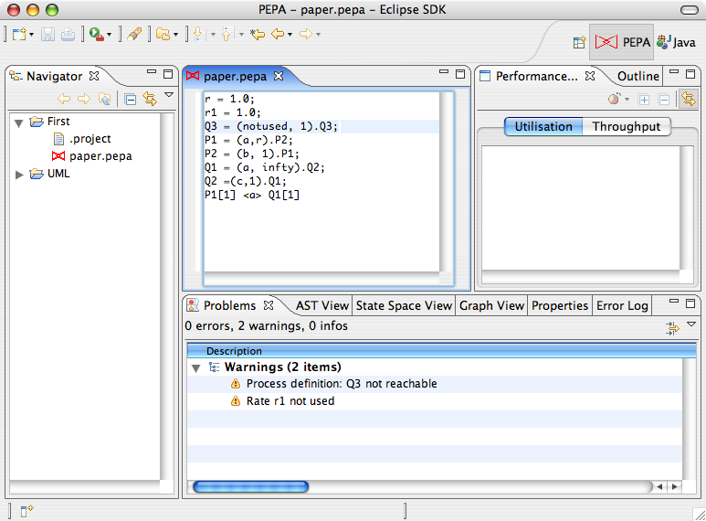

The PEPA Editor lets you edit PEPA input model files. It is associated
to open files with the .pepa extension in the workbench.
In order for to open a PEPA input file
in the Eclipse workbench, a project container has to be chosen.
To create a new project, select File > New > Project.... Then select General > Project. Choose a name and press Finish to complete.
To create a new file, right click the project and select File > New > File.
Give the new file the extension .pepa
The input is parsed when the file is saved. If the parsing is successful static analysis is then carried out. Warning and errors generated by both the parser and the static analysis tool are shown in the Eclipse Properties View.
